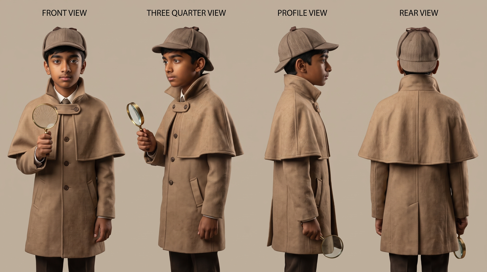
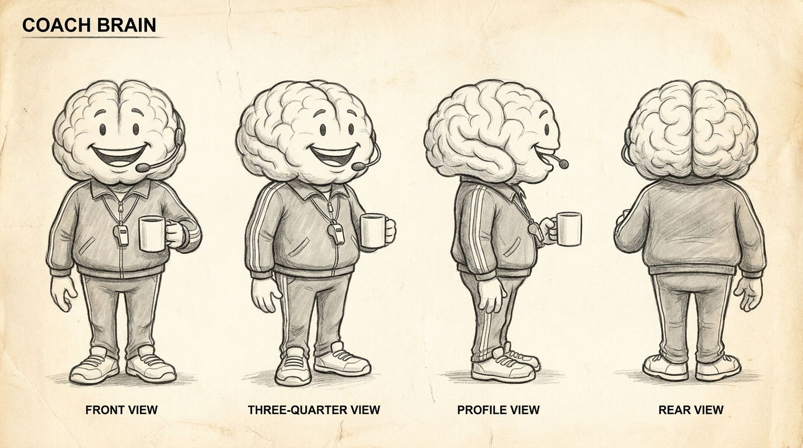
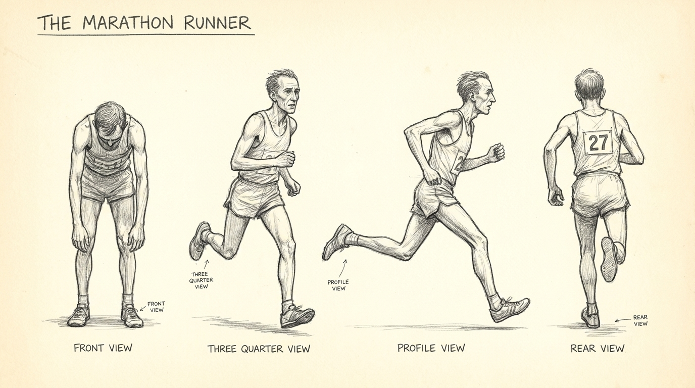
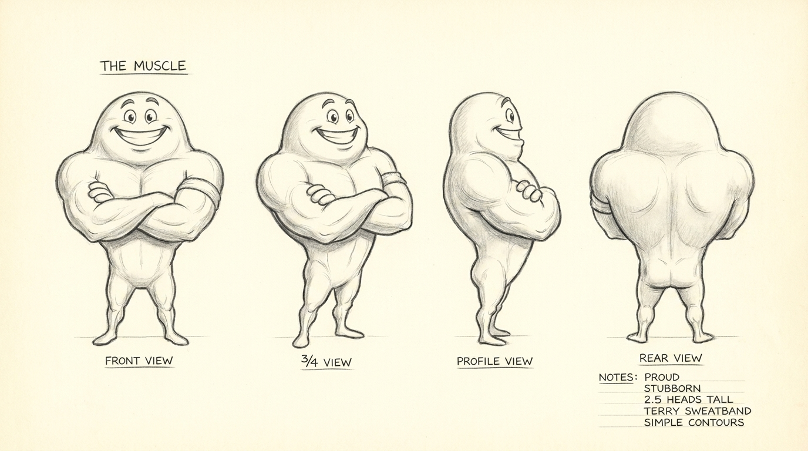
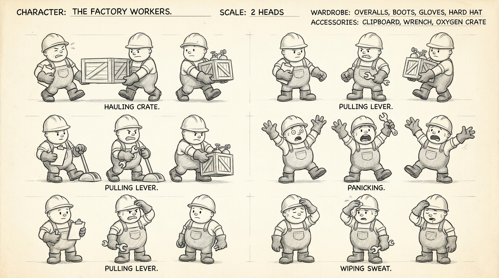

Where the film stands
One boy, one camera, one brain in a tracksuit. A two minute film about why your body slows you down before it breaks you.
What we are making
A two minute film explaining the Central Governor Theory, the idea that fatigue is not your muscles running out of fuel but your brain applying a protective brake. Manan appears on camera as a detective investigating an impossible question. Everything around him is animated.
Who does what
| Person | Role | Where |
|---|---|---|
| Neha Sonthalia Periwal | Client and producer, sole approval point | Bangalore |
| Manan Periwal | Writer and performer, owns the concept | Bangalore |
| Venkatesh Aurovenkatesh | Cinematographer, camera, sound, lighting | Auroville |
| Kristijan Kaurić | Animation and motion, Brojka | Zagreb |
| Marko Boško | Director, editor, sound design, original score | Zagreb |
The chain
Nothing here runs in parallel. Each stage feeds the next, so a slip anywhere pushes everything behind it.
The shoot is the fragile link. Everything downstream is inside one country and one editing room. Once the rushes exist, the rest is controllable.
Rules that do not bend
- The concept, script and explanation are Manan's own work. The crew provides craft, not ideas.
- No brand logos on screen. The phone is generic.
- Hill and Noakes are drawn, never photographed.
- The theory is presented as contested, not settled. The subtitle stays in.
The film, 2:00
Six scenes. Three live action setups. Everything else is drawn.
Scene 1 — The Mystery 0:00 – 0:18
EXT. MARATHON COURSE — DAY (ANIMATED)
A lean runner is failing. Head rolling, legs heavy. The commentator writes him off. Then he explodes into a sprint. Freeze. Colour drains to blue.
INT. FROZEN WORLD (LIVE ACTION) — Manan steps into the frozen frame with the magnifying glass, inspects the runner, turns to camera.
Scene 2 — The Old Answer 0:18 – 0:42
INT. DUSTY CLASSROOM (ANIMATED) — A chalkboard, a drawn portrait of A.V. Hill, 1923. The runner becomes a cartoon factory. Oxygen trucks arrive, then stop. Alarm. Workers haul the BACKUP POWER lever. Purple smoke. Machines grind to half speed. A rubber stamp slams down, CASE CLOSED. The sprint replays. The stamp cracks.
Scene 3 — The Suspect 0:42 – 1:12
INT. MISSION CONTROL (ANIMATED) — Glowing blue command centre. Monitors reading heart rate, temperature, hydration, oxygen. A chair turns. Coach Brain, tracksuit, whistle, headset, coffee mug.
A two second subtitle carries the honesty: Central Governor Theory, proposed by Prof. Tim Noakes, 1997, still debated by scientists.
Scene 4 — Low Power Mode 1:12 – 1:32
INT. MISSION CONTROL (ANIMATED) — Push into one monitor. It becomes a generic phone. Battery drains, 100, 82, 42, 20. LOW POWER MODE slides down. Screen dims. Apps close themselves. A shield forms around the battery.
Scene 5 — The Finish 1:32 – 1:52
SPLIT SCREEN (ANIMATED, no live action) — Left, the runner trembling twenty metres out. Right, Coach Brain reading every screen. SAFETY SCAN. Every monitor flashes green. The lever eases up, 82 to 95 percent, never 100. Inside the runner's legs, muscle fibres glow, first a few, then many.
Scene 6 — The Twist 1:52 – 2:00
INT. WHITE VOID (LIVE ACTION) — Everything drains to white. Manan alone. The Muscle on his left, Coach Brain on his right, an emergency brake marked FATIGUE between them. They shake hands.
Characters
These sheets are the single source of truth. Every storyboard frame and every animated shot references them directly, so the cast never drifts.





House rules for the look
- Graphite pencil on aged cream paper. Hand drawn line, visible strokes, no vector cleanliness.
- The runner's bib is 27 in every single frame. Small fixed details are what make an audience read a character as the same person.
- Manan's wardrobe never changes: tan coat, deerstalker, white collar, brass magnifying glass.
- Coach Brain is never angry, never panicked. He is the calmest character on screen. That is the whole joke and the whole science.
Neha
You hold the money, the approvals and the boy. Three things only you can unblock.
What sits with you
- Approve the two minute cut. Manan's draft was around five minutes of material. It has been cut to the spine. Read it, tell us what he cannot bear to lose.
- Book the shoot with Venkatesh. You pay him directly, locally, in rupees. One day, in or around Pondicherry.
- Approve the animation budget once the scene breakdown shows how much animation there actually is.
- Get Manan to the room rested. Not after a school day. This matters more than any technical decision.
Money, in the open
| Line | Who | Amount | Terms |
|---|---|---|---|
| Concept, direction, edit | Marko | 700 EUR | 50 / 50 |
| Sound mix | Marko | 200 EUR | 50 / 50 |
| Original score | Marko | 300 EUR | 50 / 50 |
| Animation | Kristijan, Brojka | To be quoted | 50 / 50 |
| Shooting day | Venkatesh | Quoted locally | Direct, in rupees |
Every invoice arrives through one shared folder so nothing is hidden and nothing is duplicated. Kristijan bills below his normal rate because this is a student's film.
What you will see, and when
- Rushes within two days of the shoot, so you know we have what we need.
- Rough cut with placeholder graphics around 20.8., before animation begins.
- Animated cut around 27.8.
- Final film 1.9., a full fortnight before the deadline.
Every version lands in the Versions tab of this page and stays there. Nothing gets overwritten, so you can always see how the film grew.
Venkatesh
One day, three setups, one boy against grey. Everything else in this film gets drawn later in Zagreb.
The one thing to understand
You are not filming a marathon. You are filming a boy in a detective coat standing in an empty grey room, reacting to things that do not exist yet. The marathon, the factory, the mission control room and Coach Brain are all animated in post and built around him.
So your job is to hand over a clean, consistent, well lit boy who can be cut out and placed anywhere. Consistency beats beauty on this one.
Technical
Working with Manan
Manan has ADHD. The whole shooting method is built around that, and it also happens to produce a better film.
- One sentence per take. Never ask him to run a paragraph. Reset fully between lines.
- Let the camera roll through the resets. The unguarded moment between takes is often the one that ends up in the film.
- No counting down, no pressure language. Just roll and let him go when he is ready.
- Break every twenty minutes. A tired take is a wasted card.
- Take six is usually the one. The first takes are performed, the middle ones are relaxed. Shoot past the point where it feels finished.
The three setups
| Setup | Scenes | What we need |
|---|---|---|
| A | 1 and 2 | Wide of Manan entering frame right, stopping, raising the glass, inspecting an eyeline mark at camera left. Then a medium for the dialogue. |
| B | 3 and 4 | Manan reacting to Coach Brain. Place a tennis ball on a stand at seated height for his eyeline. Plus ten seconds of silent reactions: surprise, listening, half smile. |
| C | 6 | Manan against grey, arms at his sides, three short lines direct to lens. Also shoot him looking left, looking right, and pointing up. |
Scene 5 needs nothing from you. It is entirely animation.
Delivery
- Original camera files, untouched, no transcode, no grade.
- Separate audio files with the slate intact.
- A photograph of the wardrobe and of each lighting setup.
- Upload within 48 hours of the shoot. The whole Zagreb schedule starts the moment they land.
Kristijan
Dolaziš na gotov rez. Upute za grafiku stižu kadar po kadar. Tvoje je kako to izgleda i kako diše s ritmom filma.
Podjela posla
Koncept, snimljeni materijal i gotov rez dolaze od mene. Ti dobivaš točne upute za grafiku, kadar po kadar, a kod nekih kadrova ću naznačiti da idu kao čista animacija, bez snimke ispod. Što ide u animaciju i koja je ideja iza toga, to postavljam ja. Na tebi je stil.
Gdje je težina animacije
| Scena | Trajanje | Što treba | Težina |
|---|---|---|---|
| 1 Misterij | 18s | Maraton, freeze, upitnici, špica | Srednja |
| 2 Stara teorija | 24s | Ploča, tvornica, radnici, dim, pečat | Teška |
| 3 Osumnjičeni | 30s | Mission control, Coach Brain, monitori, poluga | Teška |
| 4 Low power | 20s | Telefon, baterija, morph u Coach Braina | Srednja |
| 5 Finiš | 20s | Split screen, sprint, mišićna vlakna | Teška, bez snimke |
| 6 Obrat | 8s | Bijela praznina, dva lika uz Manana, kartica | Laka |
Scena 5 nema snimljenog materijala, sve je crtano. Scene 1, 3, 4 i 6 su kompozit, Manan snimljen na sivom i ubačen u nacrtane prostore.
Stil
- Likovi su definirani na model sheetovima u tabu Characters. To je jedini izvor istine, ništa ne smije odlutati.
- Broj 27 na dresu trkača u svakom kadru.
- Coach Brain nikad nije uspaničen. On je najsmireniji lik u filmu, i to je cijela poanta.
- Telefon je generički. Bez logotipa, bez prepoznatljivog brenda.
- Hill i Noakes se crtaju, ne koriste se fotografije.
Isporuka
Plaćanje
Račun šalješ meni, ja ga stavljam u zajedničku mapu odakle ga naručiteljica preuzima. Pola unaprijed, prije nego kreneš s animacijom, pola po predaji. Bez avansa ne kreće se s poslom.
Director
The job is to protect one idea from six people's good intentions.
The spine
A question is asked in the first eighteen seconds and answered at 1:52. Everything between those two points either sharpens the question or delays the answer. Anything that does neither comes out, however good it is.
What got cut, and why
- The chalkboard flowchart. It explained the same thing as the factory. Two explanations of one idea is one too many. The factory survived because it is funnier and easier to feel.
- The extended Coach Brain comedy. The whistle, the red panic button, the medal ceremony. Charming, but the film has 120 seconds and the comedy was pushing out the science.
- The three card comparison at the end. Replaced by a handshake and a question mark. Faster, and it says the same thing without reading like a slide.
Direction of the performance
Manan should sound like a boy who has genuinely noticed something odd, not like a presenter. Curiosity over polish. The takes where he forgets he is performing are the ones to use.
Because he has ADHD we shoot in fragments, one sentence at a time, and assemble the performance in the edit. This is not a compromise. Fragmented shooting produces a livelier cut than any long take would have.
The one shot that must land
Scene 4, the line "it's saving something for later". Everything before it is setup and everything after it is confirmation. If that take is not right, the film is competent instead of memorable. Shoot it into the ground.
Tone
- Warm and curious, never lecturing.
- The film admits the science is unresolved. That honesty is the point of the last scene, and competition judges read for it.
- No shouting, no big music swell on the reveal. The reveal is a lever moving quietly.
Editor
The performance does not exist until it is assembled. That is literally true on this film.
Method
Manan is shot one sentence at a time. The edit stitches those fragments into a single continuous delivery, so the audience sees a boy speaking fluently for two minutes when in fact no take ran longer than a few seconds.
- Cut on the breath, not on the word. The join disappears in the intake.
- Where a join will not hide, cut away to animation for eight frames and come back. There is always something drawn to cut to.
- Keep the room tone continuous underneath so the audio never reveals the joins.
Pacing targets
Total 2:00 exactly. The competition is strict about it, so the film is built to that number rather than trimmed to it afterwards.
Order of work
- Assemble Manan's performance first, with black where animation will go.
- Lock that cut. Timings must be final before Kristijan starts, or he animates to a moving target.
- Export a reference cut with burnt in timecode and scene labels for the animation brief.
- Conform the returned animation layers, then grade.
Sound design
In a film this dense, sound is what makes the cuts vanish and the science feel physical.
The sound of each world
| World | Character |
|---|---|
| Marathon | Crowd wash, breath, footfall on tarmac, distant commentary. Everything slightly compressed, like a broadcast. |
| Freeze | Everything drops away to a single low tone. The absence is the effect. |
| Classroom and factory | Chalk, dry room, then industrial. Trucks, hydraulics, an alarm klaxon, machinery slowing to a grind. |
| Mission control | Soft electronic beeps, a low room hum, the mechanical clunk of the lever. Calm and clinical. |
| Phone | One clean notification chime, then the world dims audibly as apps close. |
| White void | Near silence. Only the voice and a faint high tone. |
The transitions carry the film
Six worlds in 120 seconds could feel like channel hopping. Sound is what stops that. Each transition is bridged, the sound of the next world arrives a few frames before the picture does, so the viewer is pulled forward rather than pushed between scenes.
Voice
- Manan's voice is the constant across every world. It stays dry, close and unprocessed throughout, so wherever the picture goes, he is the anchor.
- Coach Brain sits slightly behind, with a hint of room, as if genuinely in a control centre.
- Clean up handling noise and breaths on the joins, but keep breath in the performance. Breath is the subject of this film.
Music
One instrument stands for the body, one for the brain. The whole score is the conversation between them.
The idea
The film is an argument between muscle and mind, so the score is written as two voices. A pulse, which is the body, and a sustained tone, which is the governor watching over it. They are never in conflict. The tone simply keeps easing the pulse back.
Palette
- The body is percussion. Frame drum and hand percussion, played dry and close, tracking the runner's cadence.
- The brain is sustained. A low synth pad and a single held flute note, calm and unhurried, always slightly above the drums.
- The discovery is a small bright motif, three notes, first heard under the question at 0:15 and resolved at 1:52 when the board flips over.
Map
Practical
- Written to the locked picture, not before. Composing to a moving cut wastes the work.
- Delivered as stems so the mix can duck cleanly under Manan's voice.
- Entirely original, so there is no licensing question in a competition submission.
Versions
Every cut, every test, every abandoned idea. Nothing gets overwritten, so the film's whole history stays readable.
Rough cut with placeholder graphics, then the animated cut, then the final film.
What lands here, and when
| Version | What it is | Expected |
|---|---|---|
| v1 | Assembly. Manan's performance only, black where animation will go. | after the shoot |
| v2 | Rough cut with timecode and scene labels. The animation brief. | 20.8. |
| v3 | Animated cut. Kristijan's layers conformed. | 27.8. |
| v4 | Sound, score and grade. Delivery candidate. | 31.8. |
| Final | Competition master, 2:00 exactly. | 1.9. |
Older versions stay online after they are superseded. Half the value of an archive is being able to see what a film almost became.